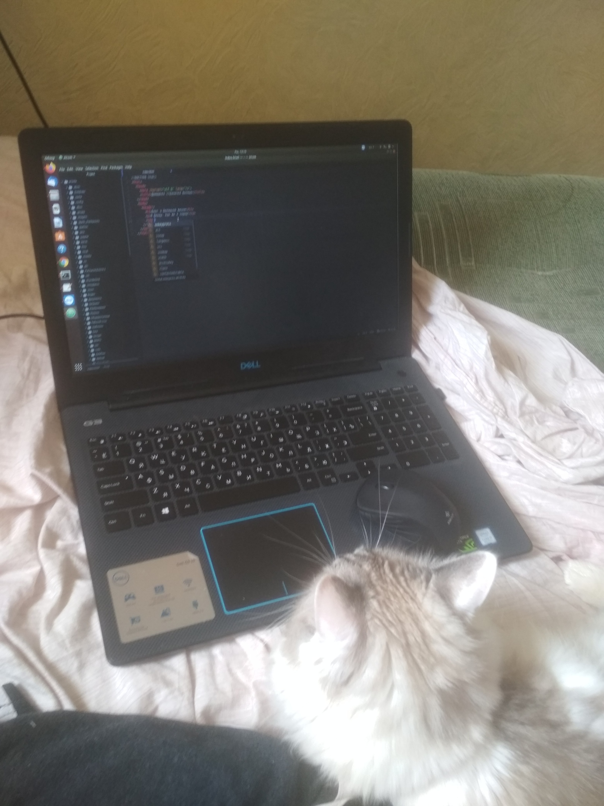
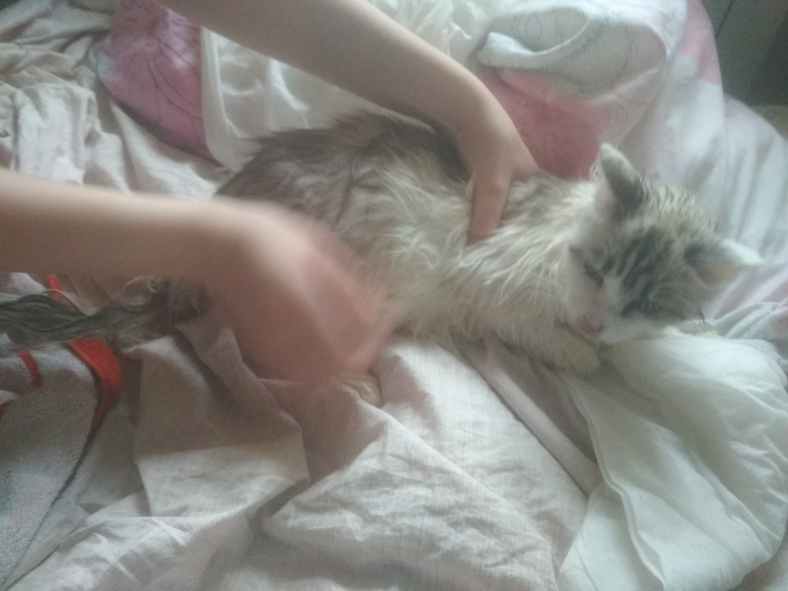

Сегодня проснулся в плохом настроении. Погода плохая и птички молчат. Пришлось залезть под кровать и сидеть там
Человеки опять что-то учудили и решили сверстать мне собственный блог. Ну-ну. Занятие сомнительное, но под моим контролем у них, может, что-нибудь сносное и выйдет

Итак, список дел на день:
Потягушки
Завтрак
Выспаться днем
Потягушки2
Ужин
Бегать всю ночь с мышью и мешать человекам спать
?????
PROFIT!
День 2. Как меня купали
Сегодня со мной произошло страшное. Это был не предвещающий ничего плохого день, но внезапно все изменилось, когда меня схватили и потащили в ванную.
Весь ужас происходящего не сразу до меня дошел. Мои мольбы были тщетны, и не оставалось ничего другого, кроме как смириться

После такой эмоциональной встряски нужно поднять себе чем-нибудь настроение. Решил вести учет своих игрушек. А для удобства - запишу их в таблицу
Моя прелесть
Игрушка
Количество
Мышь на веревочке
Шарик из мяты
Мышка синяя
3 шт
Мышка черная
3 шт
Руки человеков
6 шт
День 3. В поисках хобби
Шел 100500 день карантина. Кажется, человеки больше никогда не собираются покидать квартиру. Если бы от них какая-то польза еще была, но нет, я помираю от скуки
Поэтому я подумал и решил: мне срочно нужно новое хобби. Я, конечно, разносторонняя личность - увлекаюсь орнитологией, рисованием пастелью по полу и вырезанием по обоям и мягкой мебели, но все не то.
Пару вариантов я набросал, но никак не могу выбрать, что больше подходит. А вы как думаете?